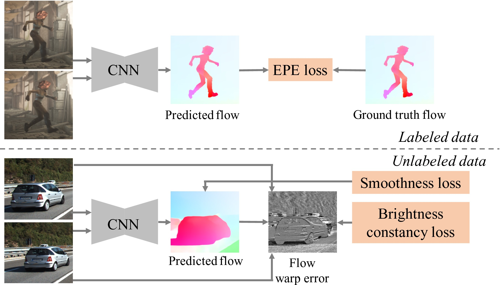
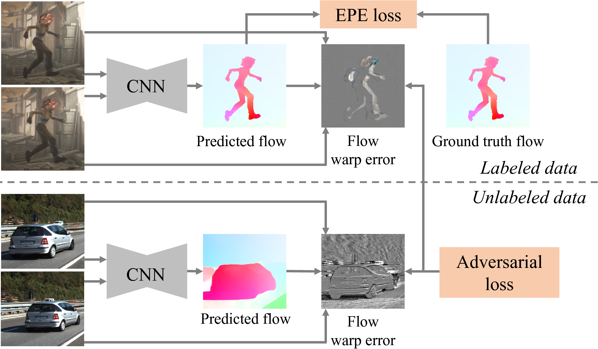

Baseline semi-supervised method

Proposed semi-supervised method
Abstract
Convolutional neural networks (CNNs) have recently been applied to the optical flow estimation problem.
As training the CNNs requires sufficiently large amounts of labeled data, existing approaches resort to synthetic, unrealistic datasets.
On the other hand, unsupervised methods are capable of leveraging real-world videos for training where the ground truth flow fields are not available.
These methods, however, rely on the fundamental assumptions of brightness constancy and spatial smoothness priors that do not hold near motion boundaries.
In this paper, we propose to exploit unlabeled videos for semi-supervised learning of optical flow with a Generative Adversarial Network.
Our key insight is that the adversarial loss can capture the structural patterns of flow warp errors without making explicit assumptions.
Extensive experiments on benchmark datasets demonstrate that the proposed semi-supervised algorithm performs favorably against purely supervised and baseline semi-supervised learning schemes.


Citation
Wei-Sheng Lai, Jia-Bin Huang, and Ming-Hsuan Yang, "Semi-Supervised Learning for Optical Flow with Generative Adversarial Networks", in Neural Information Processing Systems, 2017.
Bibtex
@inproceedings{Lai-NIPS-2017,
author = {Lai, Wei-Sheng and Huang, Jia-Bin and Yang, Ming-Hsuan},
title = {Semi-Supervised Learning for Optical Flow with Generative Adversarial Networks},
booktitle = {Neural Information Processing Systems},
year = {2017}
}
References
- • FlowNet: Learning Optical Flow with Convolutional Networks, ICCV, 2015.
- • FlowNet 2.0: Evolution of Optical Flow Estimation with Deep Networks, CVPR, 2017.
- • Optical Flow Estimation using a Spatial Pyramid Network, CVPR, 2017.